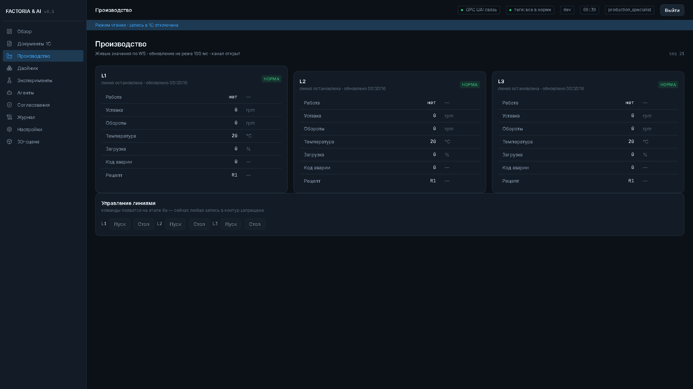
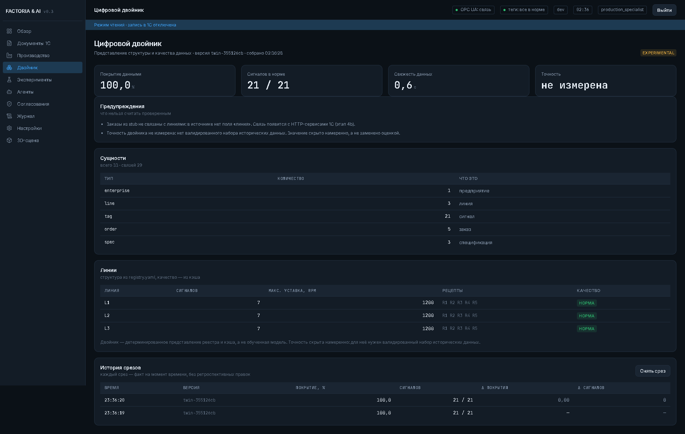
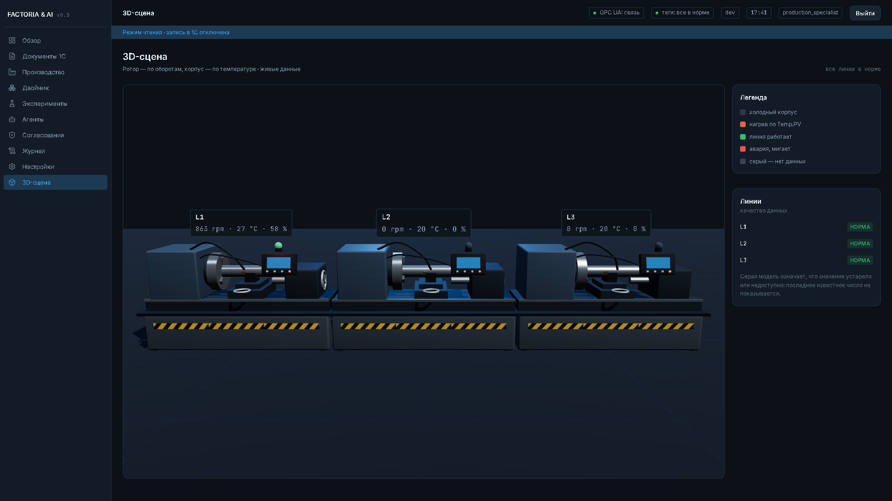
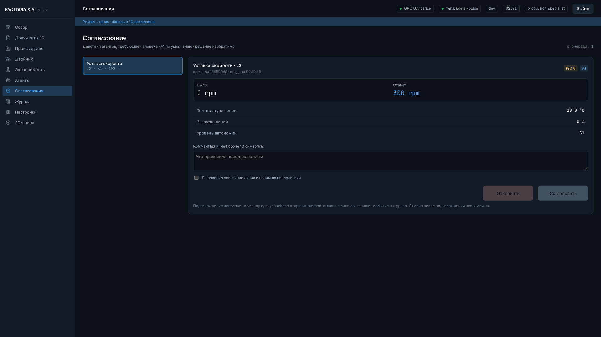
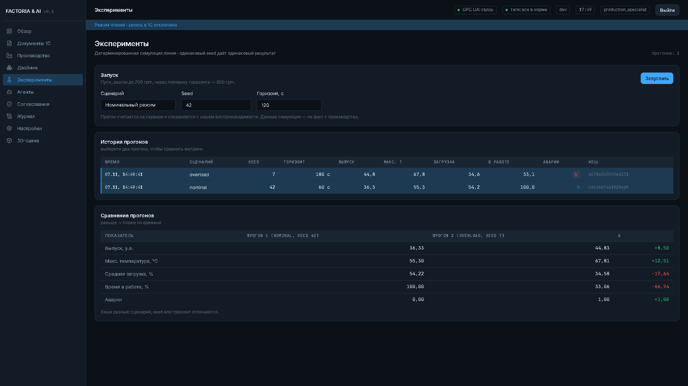
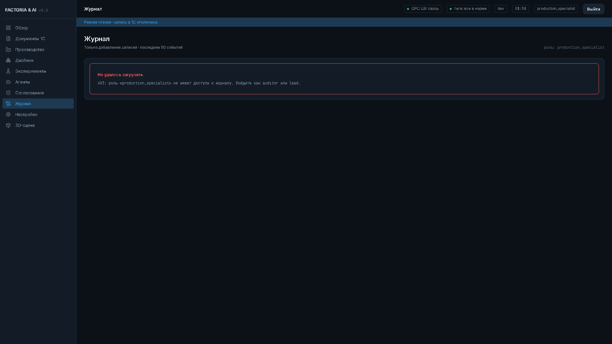

Мультиагентная платформа управления производством: OPC UA ↔ backend ↔ UI, цифровой двойник, эксперименты, согласование действий (A1). Обзорная страница (репозиторий D:\factoria).
tests/, tsc+vite. Покрытие ранее 91% (не пересчитывалось).ALLOW_EXTERNAL_API=false по умолчанию; секреты не отдаются в health./flow: 4 шаблона, 2.5D-схема, Co-Pilot (A1), очередь согласований, экспорт 1C EnterpriseData/OPC UA NodeSet2, 3D-сцена и остальные экраны. В демо backend заменён браузерной реализацией (данные имитированы).urn:mfg:emulator не менялся); 2.5D Canvas по живым сигналам; Co-Pilot создаёт реальный set_setpoint (A1, evidence) в очередь согласований — не в PLC/1C напрямую; экспорт XML из реестра (21 тег, 15 методов), без PUSH.none|deepseek|ollama (qwen3.5:35b по умолчанию), без утечки ключей; фактические агентные вызовы — при наличии env/VM/ключа (thinking off для tool-calling).# 1) эмулятор python opcua-emulator/emulator.py # 2) backend (:8010) — порт 8010, т.к. 8000 в этой среде подвисал $env:PYTHONPATH="D:\factoria\backend\src" $env:DATABASE_URL="sqlite+aiosqlite:///D:/factoria/data/factoria.db" $env:OPCUA_ENDPOINT="opc.tcp://127.0.0.1:48400" $env:ENV="dev" python -m uvicorn factoria.main:app --host 0.0.0.0 --port 8010 # 3) frontend (:5173) cd frontend npm run dev -- --host 0.0.0.0
Вход: operator / dev-password (журнал — auditor / dev-password). В LAN использовать адрес хоста (напр. http://192.168.0.15:5173); при блокировке — открыть входящие TCP 5173/8010 в брандмауэре (от админа).
GitHub Pages показывает только эту статическую страницу (без живого backend/OPC UA). Для живого демо запустите стек локально.






Скриншот страницы /flow (Поток цеха) не перегенерирован в этом прогоне; фронтенд собран, раздел доступен при запущенном стеке.
DEEPSEEK_API_KEY и/или Ollama VM (URL, модель, auth); слой готов.